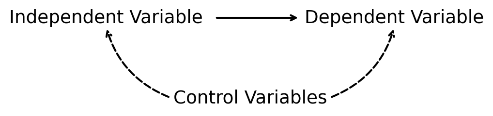

Research Project Overview
Introduction
As a part of this class, you will write an empirical research paper. You will pick a question and a dataset and use the tools from this class to answer your question. Over the semester, you will need to meet the following milestones:
- March 28: Interim Submission
- April 9: Research Project Feedback Meeting
- May 7: Final Submission
The interim submission is worth 10% of your total grade, while the final counts for 20%. Additionally, I will meet with you mid-semester to give feedback on your project, which you should incorporate into your final paper.
The objective of the Interim Submission is to make you select your data and research question and perform preliminary data analysis. The Final Submission will be 7 to 10 pages and will thoroughly discuss all the analyses you performed. The final paper should demonstrate your writing ability and ability to perform and interpret statistical analyses correctly.
Below, I outline the type of question you should choose and the criteria your dataset must meet, and also include some external sources for finding data and inspiration for your project. After you’ve completed reading the content on this page, follow these links for detailed instructions for the Interim Submission and the Final Submission.
Research Question and Data
You may choose any question and data, provided they meet the criteria outlined below.
Question
Start by identifying a topic that captivates your interest or curiosity. This could be inspired by a recent podcast you listened to or a news item that caught your attention. The key is to choose a subject that genuinely engages you, as this will make the research process more enjoyable and meaningful.
Focus your research on a cause-effect question, rather than a predictive one. In other words, rather than undertaking a project aimed at “Using weather to predict sales,” you should investigate a question such as “How does weather affect sales?” While predictive questions are important, this project is designed to enhance your understanding of causality and the challenges involved in establishing it. Therefore, your question should concern the impact of one variable on another.
Finally, ensure that your question is well-defined and feasible, meaning it should be clear and specific, and can be addressed within the limitations of time, resources, and the data available.
Variables
Once your research question is set, the next step would be to identify the variables required to investigate it. For example, if your question is “How does weather affect sales?”, you need to decide how to define ‘weather’—are you focusing on temperature, rainfall, or other weather conditions? For this project, you are required to select a primary independent variable, a dependent variable, and at least two control variables.
- Primary Independent Variable: This is the main variable you hypothesize as having an influence or effect on another. For instance, if you were studying the impact of weather on sales, temperature or rainfall would be your primary independent variable.
- Dependent Variable: This is the variable affected by the independent variable. In the example of weather and sales, ‘sales’ would be the dependent variable.
- Control Variables: These are variables that could influence the dependent variable and are potentially correlated with the independent variable. Including them in your analysis is crucial to isolate the effect of your primary independent variable. Continuing with our example, ‘time of year’ and ‘store location’ would be good control variables, as they are likely to be correlated with both weather conditions and sales.
Dataset
You have the option to select an external dataset or choose one from the list of datasets I’ve compiled for this class. The compiled datasets are available in the Dropbox folder: Econ340 Datasets. Should you choose an external dataset, make sure it includes at least 100 observations and contains all the variables you plan to utilize. If you require assistance with formatting an external dataset, kindly email me at least a week in advance of your submission deadline. I would be more than happy to help you. See External Resources for some external data sources.
The Chicken and Egg Question
Deciding whether to first select your question or choose a dataset can feel like the classic chicken and egg dilemma. A question is infeasible without available data, just as data lacks purpose without a compelling question. In my opinion, the best approach is to first identify an interesting question, then consider the variables you’ll need to explore it, and finally search for datasets that may include those variables.
However, it’s not uncommon to encounter a situation where the data you need isn’t readily available. When faced with this hurdle, you’re prompted to reassess: Could you refine your original question based on the data you do have access to, or should you explore a different question altogether—one that aligns with measurable variables in the available data? This iterative approach underscores the flexible nature of research, where adjustments to the research question and the variables of interest may be necessary to accommodate the data you can actually obtain.
External Resources
Here is a list of publicly accessible datasets that may be useful:
- The US Bureau of Labor Statistics (BLS) maintains lots of series. A notable one is the Local Unemployment Area Statistics (LUAS) which provides the unemployment rate for US metropolitan areas.
- The US Bureau of Economic Analysis also maintains lots of series. (You can look for data by Topic or by Place)
- World Bank provides large datasets across countries, including the World Development Indicators (WDI) database and the Global Financial Development Database (GFDD).
- IPUMS is your one-stop shop for downloading US (and international) microdata, such as from the Current Population Survey (CPS), American Community Survey (ACS), American Time-Use Survey (ATUS), etc.
- Two leading US longitudinal datasets are the Panel Study of Income Dynamics (PSID) and National Longitudinal Surveys (NLSY).
- County Business Patterns (CBP) data contains the number of establishments and employment for different industries in each US county.
- FRED at the Federal Reserve Bank of St. Louis maintains numerous data series on macroeconomic variables (mostly time series).
- Opportunity Insights Data Library has some datasets at the county or commuting zone level with variables related to economic mobility.
- More county-level data is available from USDA ERS.
- Check out FiveThirtyEight for sports and election data.
- If you are looking for more data, check out AEA’s Compiled Data Sources (Check this link too).
If you need some inspiration to come up with a research question, here are some links to get you thinking:
Newspapers and other news outlets are also good sources to learn about current issues.